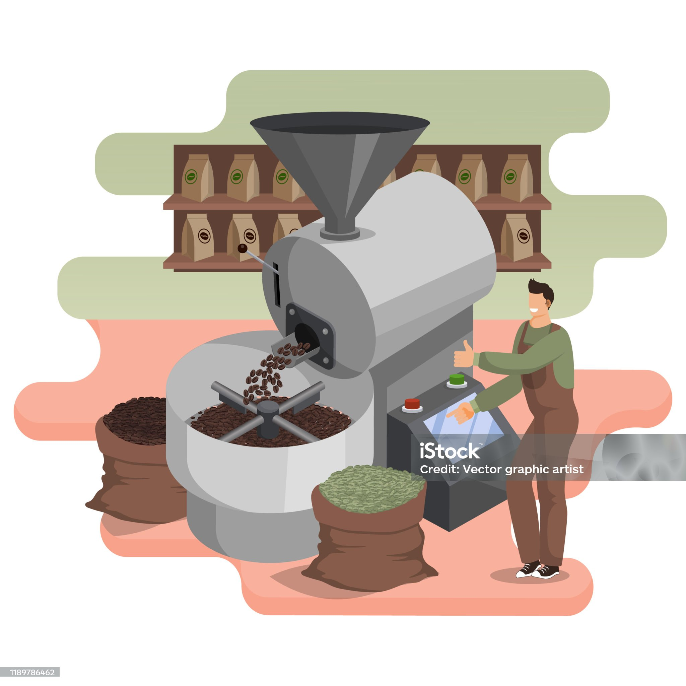
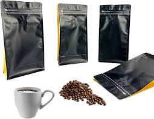
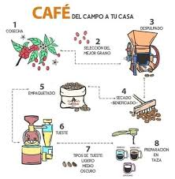
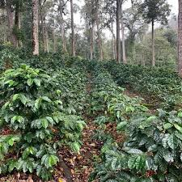
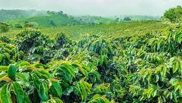
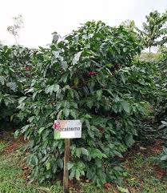
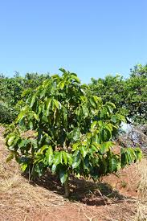
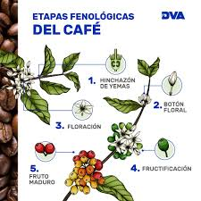
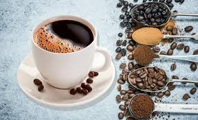
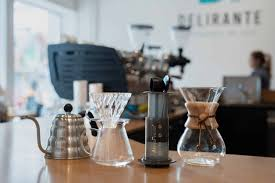

Pasión por el café, desde la finca hasta tu taza
Ubicados en El Paraíso, Honduras, nos especializamos en el tostado industrial de café y su venta al por mayor y menor. Trabajamos con productores locales y garantizamos calidad desde el origen.


Desde la recolección del grano hasta el tueste, el café vive un viaje mágico. Estas son algunas etapas clave:


Conoce las principales variedades que cultivamos:



El café requiere cuidado constante. El ciclo incluye:

Sigue estos pasos para disfrutar al máximo tu café:


¿Deseas comprar nuestro café o tostar el tuyo con nosotros?
📍 El Paraíso, Honduras
📧 inversionesajem@gmail.com
📱 WhatsApp: +504 9377-0056
📱 WhatsApp: +504 8821-8871